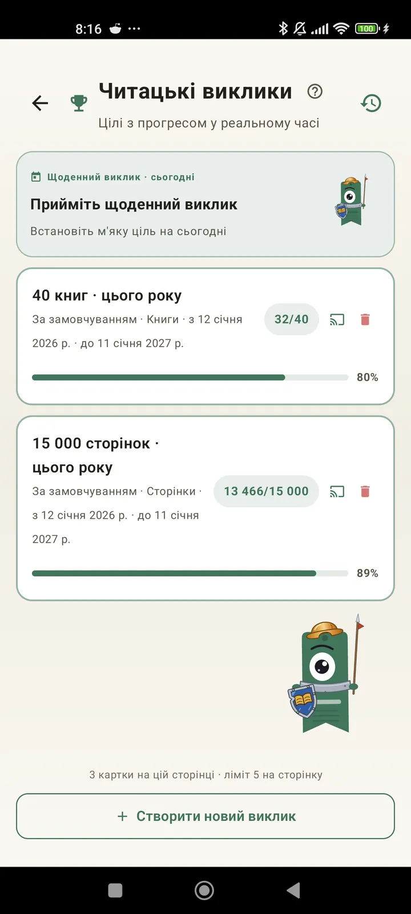

Пізнай себе як читача
Виклики, Bingo, віджети та інші функції, щоб отримати від читання більше. Нове в 3.7: віджети викликів і Bingo.

Читацькі виклики
Став цілі за сторінками, серіями днів або жанрами. До 15 активних викликів безкоштовно, без обмежень із Pro. Плюс щоденний виклик, який можна налаштувати і який не входить у ліміт.

Щоденний виклик
Нова ціль щодня. Виконай виклик до півночі, щоб не перервати серію.

Bingo для читання
Два нових Bingo щомісяця з тематичними клітинками. Заповнюй рядки, стовпці або всю картку.

Підсумок тижня
Щопонеділка короткий огляд твого тижня: прочитані сторінки, загальний час, серія та порівняння з попереднім тижнем.

Підсумок місяця
Коли місяць закінчується, Lecturameter підбиває підсумки: сторінки, час, завершені книги, твій темп день за днем і книга місяця.

Віджет Bingo Pro
Картка Bingo цього місяця завжди перед очима: із заповненими клітинками та зібраними лініями.

Віджет книги Безкоштовно
Бач книгу, яку читаєш, просто на головному екрані: обкладинка, назва, автор, сторінки та відсоток прогресу, завжди актуальні. Розмір можна змінювати як завгодно.
Серйозно, бро, цей застосунок як терапія: я перейшов від пари сторінок на день до приблизно 20 сторінок на день, і це ще зростаєВідгук користувача, надісланий електронною поштою

Місячне порівняння Pro
Швидкий погляд на останні місяці без відкривання застосунку. Стовпчики сторінок за кожен місяць, поточний виділено, тож одразу видно, чи цього місяця ти читаєш краще, чи гірше, ніж минулого.

Віджет викликів Pro
Твої активні виклики та їхній прогрес на головному екрані. Які саме показувати, обираєш на екрані «Виклики».